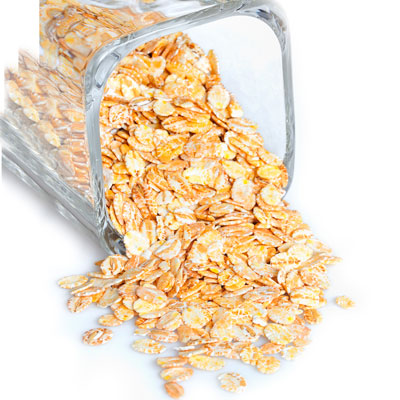
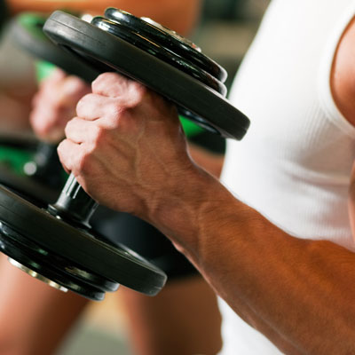
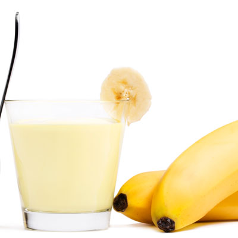

Batidos para aumentar masa muscular
Te levantaste un día común y corriente y pensaste, “tengo que hacer ejercicio” miraste el espejo y aunque te gustó lo que viste, sientes que puedes hacer algo más por tu salud y cuerpo.
Hoy en día es importante tener una vida fitness, no solo por vanidad también por salud, cuando un hombre busca entrenarse algunos lo hacen para bajar de peso, otros para mantenerse y hay quienes quieren una figura tonificada y musculosa a la vez.
No te preocupes aquí te dejamos los mejores batidos para que inicies una vida saludable sin sacrificios.
Pre – entrenamiento
180 gr. de yogurt griego sin grasa y sin azúcar
1 banano
1 taza de espinaca
30 gr. de mantequilla de maní
1 taza de leche vegetal
1/2 taza de avena en hojuelas
2 claras de huevo
180 gr. de yogurt griego sin azúcar
1 durazno
1 cda. de almendras
3 cdas. de avena en hojuelas precocida
- 
- 
- 
Pos – entrenamiento
1/2 taza de avena en hojuelas
1 taza de leche vegetal
1 banano
30 gr. de almendras
1 yuca cocida o batata cocida (mediana)
1 taza de leche vegetal
1 cda. de miel de abejas
canela al gusto
1 taza leche de almendras
3 cdas. semilla de cañamo
2 cdas. de avena en hojuelas
1 cda. de mantequilla de maní
2 cdtas. de cacao en polvo sin azúcar
1 banano
Con estos 6 batidos estarás listo para iniciar una vida saludable, se pueden alternar para que no caigas en la monotonía, no olvides mantener una dieta balanceada, hidratación y claro una rutina de ejercicios regular.
TIPS PARA LOGRAR LA META
Realizar entrenamiento de fuerza, mínimo tres veces máximo cinco a la semana, con 5 o 6 ejercicios por grupo muscular, buen peso con el que puedas hacer entre 8 y 12 repeticiones máximo, realizar ejercicios compuestos.
Aumentar el consumo de carbohidratos complejos y grasas buenas en la alimentación diaria.
Dormir muy bien, de 6 a 8 horas.
Comer entre 5 y 6 veces al día incluyendo proteína en cada plato.
Ser constante en tu entrenamiento.
Especialista Consultada:
JULIANA GIRALDO ARANA
Entrenadora Personal Certificada
 @equilibra.fit – @juligiraldoa.fit
@equilibra.fit – @juligiraldoa.fit
 Equilibra. Entrenamiento Personalizado a domicilio
Equilibra. Entrenamiento Personalizado a domicilio